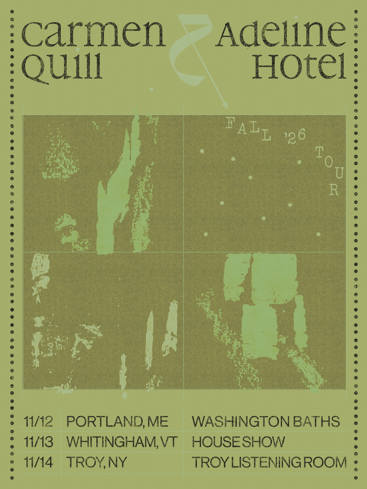

Thursday, November 12, 2026
Doors: 7 PM / Music: 8 PM
PURCHASE TICKETS

Carmen Quill is a double bassist, composer, singer and interdisciplinary artist based in Brooklyn, NY. She is recognized for her sound and versatility on the double bass, her captivating performances as a solo artist, and her intuitive sensitivity as an improviser. Her debut solo recording, Don’t Get Comfy / Nowhere (2021), “thrives on the meeting of reservation and vulnerability, and its songs feel as emotional and virtuosic as a power ballad yet are sparse and withholding as a Rembrandt” (Pitchfork). In addition to producing and performing her solo music she performs and releases music as part of the bands tilt, Scree, and a host of other projects and collaborations. Carmen is a 2025 Next Jazz Legacy Awardee (New Music USA). In September 2026, Carmen will release a live trio recording featuring Jacob Sacks and Billy Hart entitled “I’ll Be Thinking of You on Thursday” on the new Close Up record label.
In the tender, surrealist world that Dan Knishkowy has developed under the name Adeline Hotel, stories have been told through sprawling psych-rock epics (2020’s Solid Love), stark solo guitar performances (2021’s Good Timing), piano-led orchestral song cycles (2021’s The Cherries Are Speaking), and lush, jazzy compositions that felt like a genre unto themselves (2023’s Hot Fruit). Inspired by indie lifers and fellow world-builders like Jim O’Rourke and Phil Elverum, the Ruination Records co-founder has rewritten the rule book with each new project, inviting listeners to join as he discovers new channels for his singular voice. By now the sound of Adeline Hotel is equally identifiable through Knishkowy’s dextrous fingerpicking—the aural equivalent of tracing your fingers through cool sand at sunrise—as his low, whispered vocals and autumnal melodies.
Adrian O’Barr is a songwriter and guitarist living in Portland, Maine. Having put out music with his band Wildflower for the past 8 years, he is now embarking on a new musical journey under his own name. Influenced by Celtic music, Jazz, and the finger style guitar playing of Bert Jansch, John Martyn, and others, his new project is a deeper exploration of guitar composition and pushes the pastoral folk of Wildflower further into the unknown.